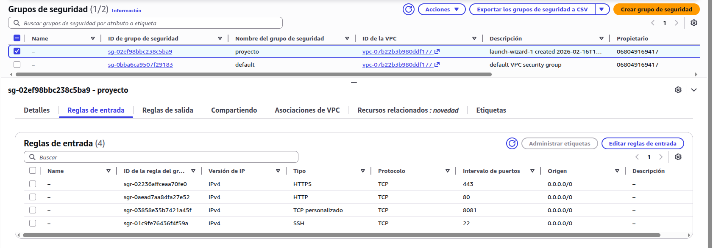

Desarrollo
En esta fase se ha llevado a cabo el despliegue completo de la infraestructura necesaria para el funcionamiento del sistema de gestión del taller FHD Proyects, utilizando servicios de AWS y contenedores Docker orquestados mediante Docker Compose v2.
1. Infraestructura en AWS
Se ha desplegado una instancia EC2 en la región us-east-1 con Ubuntu Server 22.04 LTS, asociada a una Elastic IP para disponer de dirección pública fija.
Security Groups
Se configuró un Security Group específico con las siguientes reglas de entrada:
| Puerto | Protocolo | Origen | Uso |
|---|---|---|---|
| 22 | TCP | IP propia | Administración remota por SSH |
| 80 | TCP | 0.0.0.0/0 | Web pública WordPress |
| 8081 | TCP | 0.0.0.0/0 | Panel de administración Laravel/Filament |
El puerto 3306 (MySQL) no está expuesto en ningún momento, garantizando que la base de datos solo sea accesible desde la red interna de Docker.

2. Estructura del proyecto
Todos los archivos de configuración se organizan bajo /opt/taller:
/opt/taller/
├── docker-compose.yml # Orquestador principal
├── .env # Credenciales y variables (nunca en Git)
├── nginx/
│ └── conf.d/
│ └── default.conf # Configuración del reverse proxy
├── mysql/
│ └── init/
│ └── 01_init.sql # Inicialización de BBD y tablas
└── laravel/
└── Dockerfile # Imagen personalizada PHP 8.2
Los datos de las aplicaciones se almacenan en volúmenes Docker gestionados, fuera del directorio del proyecto, garantizando su persistencia ante reinicios.
3. Docker Compose
El fichero docker-compose.yml define los cuatro servicios del sistema, la red interna privada taller_network y los tres volúmenes persistentes:
services:
nginx:
image: nginx:alpine
ports:
- "80:80"
- "8081:8081"
volumes:
- ./nginx/conf.d:/etc/nginx/conf.d:ro
- wordpress_files:/var/www/html/wordpress:ro
- laravel_app:/var/www/panel:ro
wordpress:
image: wordpress:fpm-alpine
environment:
WORDPRESS_DB_HOST: db:3306
WORDPRESS_DB_NAME: ${WP_DB_NAME}
WORDPRESS_DB_USER: ${WP_DB_USER}
WORDPRESS_DB_PASSWORD: ${WP_DB_PASSWORD}
depends_on:
db:
condition: service_healthy
laravel:
build:
context: ./laravel
dockerfile: Dockerfile
environment:
DB_CONNECTION: mysql
DB_HOST: db
DB_DATABASE: ${TALLER_DB_NAME}
DB_USERNAME: ${TALLER_DB_USER}
DB_PASSWORD: ${TALLER_DB_PASSWORD}
depends_on:
db:
condition: service_healthy
db:
image: mysql:8.0
volumes:
- mysql_data:/var/lib/mysql
- ./mysql/init:/docker-entrypoint-initdb.d:ro
environment:
MYSQL_ROOT_PASSWORD: ${MYSQL_ROOT_PASSWORD}
MYSQL_DATABASE: ${WP_DB_NAME}
healthcheck:
test: ["CMD", "mysqladmin", "ping", "-h", "localhost"]
interval: 10s
retries: 10
volumes:
mysql_data:
wordpress_files:
laravel_app:
networks:
taller_network:
driver: bridge
Todas las credenciales se cargan desde el fichero .env, que nunca se sube al repositorio Git.
4. Nginx como Reverse Proxy
Nginx actúa como único punto de entrada desde el exterior y enruta el tráfico según el puerto de la petición: el puerto 80 hacia WordPress y el puerto 8081 hacia el panel de administración Laravel/Filament. Ningún otro contenedor tiene puertos expuestos directamente al exterior.
5. Imagen personalizada de Laravel
Dado que Laravel y Filament requieren extensiones PHP adicionales, se creó una imagen personalizada a partir de php:8.2-fpm-alpine que incluye todas las dependencias necesarias, entre ellas pdo_mysql, intl, gd y zip, además de Composer para la gestión de paquetes.
6. Base de datos
MySQL gestiona dos bases de datos separadas dentro del mismo contenedor:
wordpress— datos del CMS, accedida por el usuariowp_user.taller_motos— datos del negocio (clientes, motos, reparaciones, mecánicos), accedida por el usuariolaravel_user.
Cada usuario tiene privilegios mínimos sobre su propia base de datos únicamente. El script de inicialización crea automáticamente las tablas y carga datos de ejemplo al primer arranque.
7. Panel de administración Laravel + Filament
Tras el despliegue de los contenedores se instaló Laravel 11 y Filament v3 dentro del contenedor, generando los módulos de gestión del taller:
- Clientes — registro y búsqueda de clientes.
- Motos — vehículos vinculados a cada cliente.
- Reparaciones — historial de trabajos con estado, fechas y costes.
- Mecánicos — personal del taller.
El panel es accesible en http://IP:8081/admin con autenticación propia.
8. Verificación del sistema
Una vez completado el despliegue se verificó el correcto funcionamiento de todos los servicios:
| URL | Resultado |
|---|---|
http://IP/ |
Web pública WordPress ✅ |
http://IP/wp-admin |
Panel WordPress ✅ |
http://IP:8081/admin |
Login Filament ✅ |
http://IP:8081/admin/clientes |
Listado de clientes ✅ |
http://IP:8081/admin/motos |
Listado de motos ✅ |
http://IP:8081/admin/reparaciones |
Listado de reparaciones ✅ |
http://IP:8081/admin/mecanicos |
Listado de mecánicos ✅ |
Se comprobó también que los datos persisten tras reiniciar los contenedores y que MySQL no es accesible desde el exterior gracias al Security Group y a la red interna de Docker.
9. Conclusiones de la fase de desarrollo
El uso combinado de AWS EC2, Elastic IP, Security Groups y Docker Compose ha permitido desplegar una infraestructura modular, segura y reproducible en la que cada servicio corre de forma aislada y puede ser mantenido o actualizado de forma independiente. El proyecto está preparado para una migración a producción real añadiendo únicamente un dominio propio y certificados SSL con Let's Encrypt.